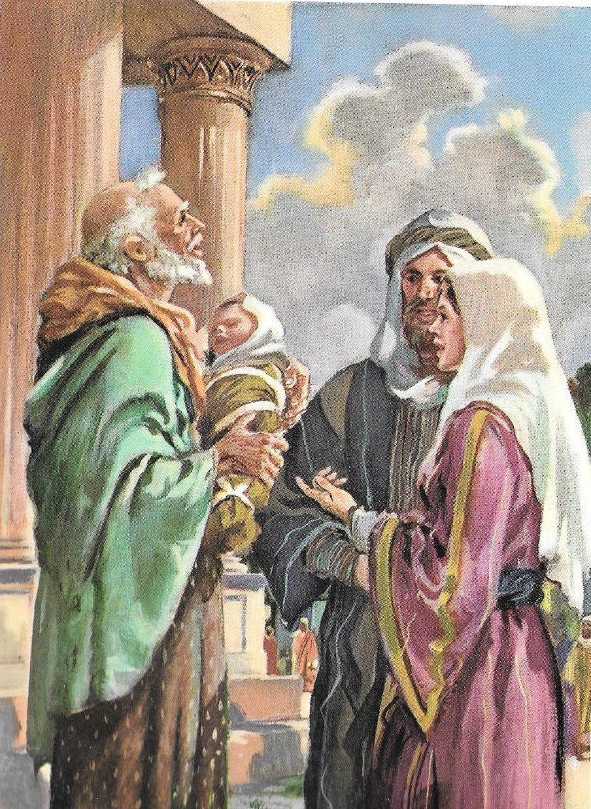
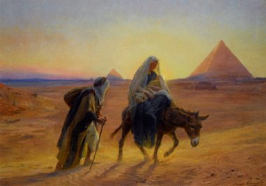
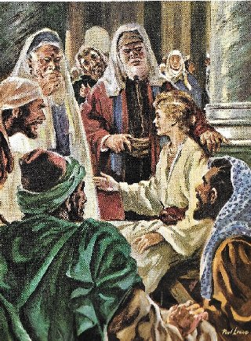
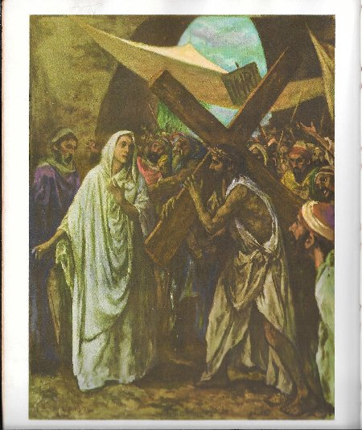
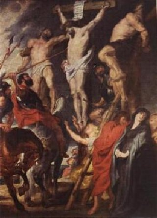
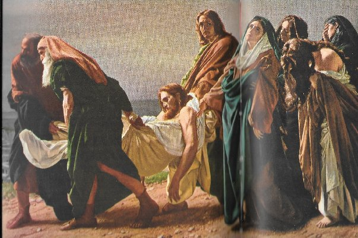
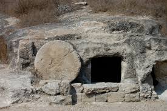

AS SETE DORES
DE MARIA
1ª DOR - NASCEU NA
“PROFECIA DE SIMEÃO NO TEMPLO”:
MARIA e JOSÉ, levaram JESUS
para ser apresentado a DEUS no Templo em Jerusalém. Embora determinados no
sentido de cumprir a Lei judaica, estavam estimulados por um forte
sentimento amoroso que envolvia seus corações para cumprir carinhosamente aquele
ato com o CRIADOR. Encontrava-se também no Templo, Simeão, que era um homem
justo e muito religioso, que havia recebido a Palavra Divina, assegurando-lhe
que não morreria antes ver o MESSIAS. Quando JOSÉ e MARIA com JESUS ao colo chegaram,
o ESPÍRITO SANTO iluminou a mente de Simeão e ele compreendeu o "aviso".
Concluída a cerimônia ele se aproximou, pegou JESUS, e O elevando ao nível dos
olhos disse: “Eis
que este Menino foi colocado para a
queda e para o soerguimento de
muitos em Israel, e como um sinal de contradição, - e a TI, uma espada traspassará
TUA Alma! – para que se revelem os pensamentos íntimos de muitos corações.”
(Lc 2, 34-35) [Sinal de contradição, porque para JESUS,
a missão de iluminar e libertar o mundo pagão (e pecador) será acompanhada de hostilidade,
perseguições, sofrimentos cruéis por parte do SEU próprio povo, que culminará com uma
absurda condenação, uma abominável e covarde flagelação e uma terrível morte na Cruz].
(E disse ainda, que uma espada traspassara TUA alma, porque NOSSA SENHORA estará
presente em tudo, e sentirá o coração oprimido por tantas angústias e tantas dores,
ao presenciar todo aquele sofrimento do SEU querido e amado FILHO). Esta foi a
Primeira das Sete Dores de MARIA.
Na existência das pessoas, os
acontecimentos de cada dia se revelam em alegrias, padecimentos, satisfações,
lágrimas, que são as naturais manifestações dos sentimentos humanos. Muito
triste e infeliz seria a vida, se soubéssemos com antecedência os males
inevitáveis que iam nos acontecer. O SENHOR usando de misericórdia para conosco
nos oculta às cruzes que virão no futuro. Mas ELE não usou a mesma compaixão com
MARIA, que então, estava destinada a ser a “RAINHA DOS MÁRTIRES”, e
“em tudo semelhante ao SEU próprio FILHO
JESUS”, como sempre foi a Vontade DIVINA. Assim,
por isso mesmo, MARIA devia sofrer continuamente e ter sempre diante dos olhos
as penas que A esperavam. E elas eram exatamente a “Paixão e Morte do seu querido e amado
FILHO JESUS”.
2ª DOR –
“A SAGRADA FAMÍLIA FOGE COM JESUS
PARA O EGITO:”

Consideremos agora, a Segunda
Espada de Dor que feriu o CORAÇÃO de nossa MÃE MARIA, quando teve de fugir para
o Egito com JOSÉ, levando o MENINO-DEUS, a fim de livrá-LO da perseguição
de Herodes que queria matá-LO.
O Rei Herodes Magno, Governador
da Judéia, ao saber dos escribas e sábios da corte, que segundo a Sagrada
Escritura, JESUS, o Rei dos Judeus, o MESSIAS esperado, nasceria em Belém, ficou
com ciúmes, e em sua mente doentia nasceu o medo de perder o poder. Perverso e
de má índole, planejou matar JESUS. Sabendo que os Reis Magos procuravam na
cidade o caminho onde encontrar o MENINO-DEUS, para visitá-lo, Herodes mandou
chamar os Magos a fim de lhes ensinar o caminho para Belém, e também para lhes
fez uma solicitação: “quando
retornassem, o visitassem novamente para confirmar que o MENINO estava bem, porque
ele desejava adorá-LO também”. Todavia,
depois que os Magos estiveram com a Sagrada Família, em sonho recebeu o aviso
de um Anjo sobre as verdadeiras intenções de Herodes, e por isso, eles retornaram
à sua pátria por outro caminho, pela estrada de Hebron, não voltando a Jerusalém
para falar com o terrível Governador da Judéia.
Da mesma maneira, JOSÉ e MARIA
foram avisados em sonho pelo Anjo, que Herodes ia mandar uma guarnição militar
a Belém para eliminar JESUS. E por isso, alertou-lhes que fugissem para o Egito,
longe do alcance do cruel Monarca, e lá permanecessem até a morte dele.
O Rei da Judéia sabendo que os
Magos tinham retornado ao Oriente, sem visitá-lo, ficou enfurecido. Mandou uma
guarnição militar a Belém, com a ordem de matar todos os meninos com menos de
dois anos de idade, com a intenção de matar o MENINO-DEUS. Então aconteceu o
abominável e covarde massacre de inocentes, com a morte de dezenas de crianças,
que se tornaram os primeiros mártires da Igreja. (perderam a vida no lugar do
Redentor). (MT 2,16-17) MARIA conversando com JOSÉ relembraram a profecia de
Simeão, que já se configurava nos acontecimentos e evidenciava uma cruel contradição:
o MENINO que nasceu para Salvar o povo, já era perseguido e queriam matá-lo. Era
de fato uma terrível espada que causava dores ao SEU Coração de MÃE.
Acrescenta-se ao fato, a
realidade da inconveniente viagem em velozes camelos dromedários a fim de sair
do território de Herodes o mais rápido possível, em que MARIA num camelo levava
o MENINO JESUS e JOSÉ no outro camelo transportava sacolas de víveres e roupas. Não
é difícil raciocinar e perceber o desconforto e o cansaço da viagem com inúmeras paradas,
durante vários dias, através das areias do deserto, entre Belém na Judéia e um local no
território egípcio, que se imagina ser Matarieh, subúrbio de Heliópolis (conforme Bucardo
de Saxônia e Jansênio Gandense), onde a Sagrada Família se estabeleceu. Neste local
sofreram extrema pobreza durante sete anos (conforme considera São Tomás de Aquino
e outros), vivendo como estrangeiros, desconhecidos, na maior simplicidade,
sem dinheiro e sem parentes.
Finalmente morto Herodes, o Anjo
novamente apareceu em sonho a JOSÉ, ordenando-lhe que voltasse a Judéia. Todavia, não
regressaram a Belém, porque o novo Governador da Judéia era Arqueláu, filho de Herodes,
terrível e impiedoso como o pai. Então JOSÉ avisado pelo Anjo, seguiu com JESUS e MARIA
para o Distrito da Galiléia, estabelecendo residência na pequena cidade de Nazaré.
(Mt 2, 1-18)
3ª DOR – “PERDA DE JESUS NO TEMPLO:”
São Lucas descreve que todos os
anos, como bons judeus, JOSÉ, MARIA e JESUS, visitavam o Templo em
Jerusalém,
por ocasião da Festa da Páscoa. Nesta oportunidade, JESUS estava com 12 anos de
idade, e a visita além da formalidade anual conforme o costume judaico, se
revestia de maior importância para família, porque todo menino quando completava
12 anos de idade, atingia a maioridade, isto é, se tornava “filho da Lei”. Assim,
ELES com muita alegria participaram de todas as cerimônias, naquele clima agradável
junto dos familiares e amigos. Concluídos os festejos, como aconteciam todos os anos,
JOSÉ e MARIA assumiram os preparativos para retorno ao lar em Nazaré. Como a caravana
era grande, com diversas carruagens conduzindo as variadas famílias que vieram
participar das cerimônias judaicas, e sendo JESUS bem relacionado com todos,
JOSÉ e MARIA pensaram que ELE estivesse em alguma das outras carruagens. Naquela
época, as famílias tinham o cuidado de viajarem em grupo, formando grandes caravanas,
com o objetivo de se resguardarem de bandidos e ladrões que surgiam nas estradas.
Assim, por essa razão, JOSÉ e MARIA na sua carruagem, não se preocuparam com a ausência
de JESUS, imaginando que ELE estivesse conversando com as pessoas em outra carruagem
da caravana. Entretanto, chegando ao local determinado para parada, descanso e pernoite,
JESUS não aparecendo eles ficaram preocupados; percorreram todas as carruagens, mas
ninguém tinha notícia de JESUS. E então, como é absolutamente natural, JOSÉ e MARIA
ficaram aflitos, com o coração oprimido pela dor e a preocupação. Não havia alternativa,
ELES tinham que voltar para encontrar JESUS, pois temiam que alguma coisa houvesse
acontecido. Entretanto, já era tarde, teriam que esperar o amanhecer, e assim,
no dia seguinte saíram cedo para Jerusalém. Só chegaram ao anoitecer... Passaram
outra noite com muitas preocupações, e praticamente sem vontade de dormir, ansiosos
de chegar à manhã do dia seguinte, ou seja, do terceiro dia, para procurá-LO na
cidade. E O encontraram no Templo em Jerusalém, “ensinando”
magistralmente textos da Sagrada Escritura, aos doutores da Lei, que
estavam impressionados com a sabedoria e o conhecimento daquele MENINO.
(Lc 2, 41-50)
Os escritores sacros consideram
que estas dores de MARIA foram sim, bem elevadas, e não é difícil de compreender
que aquela profunda preocupação tenha conduzido a VIRGEM SANTÍSSIMA a um altíssimo
grau de aflição. Isto porque nas outras dores, MARIA tinha JESUS consigo ao seu
lado, perto do Seu CORAÇÃO. Desta vez JESUS estava ausente. A ausência do FILHO
querido fez crescer o sofrimento a um grau elevadíssimo, considerando que das
vezes anteriores ELA sofreu também, mais nesta última, pela força do pensamento
e dos vôos da imaginação, deixaram JOSÉ e MARIA com uma angústia muito maior,
verdadeiramente imensa, isto porque, além dos sofrimentos e da expectativa,
havia também a ausência de JESUS.
Que estes sofrimentos da
SANTÍSSIMA VIRGEM MARIA sejam olhados com atenção, e sirva também de conforto às
almas que estejam cerceadas das consolações e da presença forte e desejada do
SENHOR DEUS.
4ª DOR –
“ENCONTRO DE MARIA COM JESUS, CARREGANDO
A CRUZ, CAMINHANDO PARA A MORTE”:

É realmente compreensivo, que
todas as “mães verdadeiras” sintam as
dores dos próprios filhos, como se fossem as suas próprias dores. Por exemplo,
veja aquela citação no Evangelho de São Mateus: Uma mulher Cananéia pediu a
JESUS que livrasse a sua filha do demônio, e muito aflita falou assim:
“SENHOR, tem compaixão de mim; minha
filha está horrivelmente endemoninhada.”
(Mt 15,22) Observe, verdadeiramente ela assumiu as dores da sua filha em face daquela
possessão demoníaca. Por outro lado, qual mãe amou tanto o seu filho, como MARIA amou
JESUS? Sobretudo, porque JESUS era muito especial, pois ao mesmo tempo em que era
o SEU querido FILHO era o SEU DEUS e SENHOR. ELE veio ao mundo numa Sublime Missão
exclusivamente pela Vontade do PAI ETERNO, para atear em todos os corações o fogo
do Amor Divino, a fim de que a humanidade tivesse uma consciência reta, que cultivasse
a fidelidade e a fraternidade, e que existisse entre as pessoas, um amor dedicado, puro
e sincero, entre si e também ao SENHOR DEUS. O Evangelista São Lucas registrou o desejo
Divino; JESUS disse: “EU vim trazer
fogo a Terra, e como desejaria que já estivesse aceso!” (Lc 12, 49)
Este misto de MÃE e Serva
Piedosa ateou no Coração da SANTÍSSIMA VIRGEM MARIA um incêndio de dimensões tão
incalculáveis, que não estava configurado em face das incomensuráveis dores
do Seu Santo e misericordioso Coração de Mãe e de mulher. Foi, sem dúvida, um
sofrimento terrível e somente consolado pela grandeza do Seu Amor que sempre
cresceu, diante dos infortúnios da vida.
A agonia de NOSSA SENHORA foi
aumentando à medida que se aproximava a PAIXÃO DO SENHOR. Naquela quinta-feira,
depois da Ceia com os Apóstolos, ELE e SEUS Discípulos foram para o Monte das
Oliveiras, onde JESUS permaneceu em orações ao PAI CRIADOR. MARIA em casa sentia
uma profunda dor LHE atravessar o Coração, era uma grande expectativa na qual
imaginava o que poderia acontecer... JESUS foi preso, enfrentou um abominável
julgamento orientado e preparado contra ELE. E então, depois de sofrer uma
terrível flagelação quando foi coroado de espinhos, foi conduzido novamente ao
Tribunal, onde se mascarava um desenho de piedade diante do “ECCE HOMO” cruelmente
flagelado. Mas os algozes do Sinedrio estavam preparados e se aproveitaram da covardia
e pusilanimidade de Pilatos, instigando o povo e pedindo a morte do Rabi de
Nazaré, que afinal foi concretizada pelo Governador da Judéia, condenando
JESUS à morte na Cruz.
JESUS saiu carregando o pesado
madeiro através das apertadas ruas de Jerusalém, em direção ao local da
execução, no Gólgota, também denominado Calvário ou “lugar das Caveiras”.
E neste penoso percurso, repleto de dores e cicatrizes abertas, sangrando, causadas
pela abominável flagelação, e pela coroa de espinhos, vê SUA MÃE triste e chorosa,
lamentando aquele SEU cruel sofrimento. JESUS fez uma pausa para limpar o sangue
que turvava a sua visão e poder melhor olhar a Sua MÃE. Também queria a Mãe abraçar o FILHO
e consolá-LO. Mas os soldados romanos impacientes e brutos a afastaram e não permitiram
aquele encontro; empurraram o SENHOR e o colocaram em movimento. MARIA triste e
chorosa, na companhia do Apóstolo João, o “Discípulo amado”, seguiu acompanhando
todas as cenas ao longo daquela
“via crucis”. Foram momentos dolorosos,
acrescidos por uma tristeza que ultrapassava em muito os limites humanos. O SENHOR
estava com o corpo enfraquecido pela noite mal dormida no Sinédrio, e também por
toda aquela abominável e covarde flagelação, e em total jejum e sede de água,
além do cansaço provocado pelo peso do grosso madeiro da Cruz. Então aquele
percurso de uma caminhada de aproximadamente 600 metros, se tornou longo
e extremamente difícil de ser realizado por qualquer ser humano nestas
condições, e por isso tropeçou e caiu
três vezes.
5ª DOR –“A MORTE DE JESUS NA CRUZ”
Os soldados romanos observando que
naquela situação dificilmente JESUS chegaria ao Gólgota, chamaram Simão, que era
conhecido pelo apelido de o Cirineu, e que voltava do campo regressando ao seu lar
depois do trabalho diário, e o ordenaram carregar a Cruz do SENHOR até o Calvário.
Ele obedeceu e caminhou transportando a Cruz deixando o madeiro no local indicado
pelos soldados. Os romanos tiraram a túnica e a veste íntima de JESUS e o deitaram
sobre o madeiro, pregando primeiro a Mão Direita, enfiando um cravo de ferro com toda
força, que atravessou o pulso e fixou o SEU braço no patíbulo, fazendo jorrar o Sangue
em quantidade, em virtude de ter dilacerado os vasos sanguíneos pela brusca
penetração do cravo. Da mesma maneira os algozes pregaram a Mão Esquerda, com
energia e brutalidade. Depois levantaram o madeiro e o fixaram num buraco no
chão, e colocaram com firmeza o Pé direito de JESUS apoiado na haste vertical,
e em cima puseram o Pé esquerdo, atravessando os dois pés com um único cravo,
ficando as Pernas do SENHOR fixadas no madeiro. Dos Pulsos rasgados, saiam grande
quantidade de Sangue que corria pelos braços em direção aos Ombros. Também das
veias rompidas nos Pés escorria o precioso líquido Divino, que descia e manchava
o madeiro. Agora, ELE estava definitivamente pregado a Cruz...
Simão, que era
conhecido pelo apelido de o Cirineu, e que voltava do campo regressando ao seu lar
depois do trabalho diário, e o ordenaram carregar a Cruz do SENHOR até o Calvário.
Ele obedeceu e caminhou transportando a Cruz deixando o madeiro no local indicado
pelos soldados. Os romanos tiraram a túnica e a veste íntima de JESUS e o deitaram
sobre o madeiro, pregando primeiro a Mão Direita, enfiando um cravo de ferro com toda
força, que atravessou o pulso e fixou o SEU braço no patíbulo, fazendo jorrar o Sangue
em quantidade, em virtude de ter dilacerado os vasos sanguíneos pela brusca
penetração do cravo. Da mesma maneira os algozes pregaram a Mão Esquerda, com
energia e brutalidade. Depois levantaram o madeiro e o fixaram num buraco no
chão, e colocaram com firmeza o Pé direito de JESUS apoiado na haste vertical,
e em cima puseram o Pé esquerdo, atravessando os dois pés com um único cravo,
ficando as Pernas do SENHOR fixadas no madeiro. Dos Pulsos rasgados, saiam grande
quantidade de Sangue que corria pelos braços em direção aos Ombros. Também das
veias rompidas nos Pés escorria o precioso líquido Divino, que descia e manchava
o madeiro. Agora, ELE estava definitivamente pregado a Cruz...
João Evangelista escreveu:
“Estavam em pé junto à Cruz de JESUS,
SUA MÃE, a Irmã de SUA MÃE, Maria, mulher de Clopas e Maria Madalena.”
(Jo 19,25) E ali aos pés da Cruz onde Seu FILHO estava
crucificado, junto de João e das Santas Mulheres, MARIA permaneceu até o fim, ouvindo
as últimas palavras do SENHOR manifestando a SUA Vontade no Seu derradeiro Testamento.
Existem prezados leitores, dores
mais severas e mais profundas do que estas sofridas pela nossa querida e amada
MÃE SANTÍSSIMA? Embora, sem dizer qualquer palavra, só permitindo que as
lágrimas demonstrassem sua inconsolável tristeza por tudo o que acontecia ao SEU
FILHO, SEUS lábios guardavam um total silêncio. Todavia, muito ao contrário do
SEU CORAÇÃO que corajosamente falava. A VIRGEM SANTÍSSIMA não cessava de
oferecer mentalmente à Justiça Divina, a vida do SEU FILHO, para a Salvação da
humanidade. Com o SEU incalculável sofrimento, a MÃE DE DEUS que nos foi dada
por JESUS nos SEUS últimos momentos de vida na Cruz, para ser também a nossa
“MÃE ESPIRITUAL”
, ou seja, “MÃE ESPIRITUAL DE TODA HUMANIDADE”,
no SEU Carinhoso e Materno Coração operava com os seus sofrimentos uma admirável e
benéfica providência para os SEUS filhos espirituais, fazendo nascer à
“vida da Graça Divina” para todos nós.
E por fim, JESUS voltando a sua Divina
Cabeça em direção ao nosso coração, despediu-se dizendo que havia terminado a SUA
Missão Terrestre:
“ESTÁ TUDO CONSUMADO!”
(Jo 19, 30) E morreu na Cruz.
6ª DOR – “A LANÇADA E A DESCIDA DA CRUZ”

Como entardecia e era o “Parasceve”
(Sexta-feira, véspera do “Shabat”
dos judeus), sem notícias dos crucificados, Pilatos
mandou quebrar a perna dos condenados para acelerar a morte. Era um costume bárbaro, mas
também utilizado pelos romanos. Com as pernas quebradas, os condenados não podiam firmar
o pé no madeiro para levantar o tórax e respirar, e por isso, em poucos minutos morriam
por asfixia. O motivo de Pilatos mandar acelerar a morte dos condenados é porque
estava na tarde do "Parasceve"
, véspera do "Shabat" (Sábado que era o dia
santificado dos judeus, como o domingo é o dia santificado para os cristãos) e
pela lei, os condenados não podiam continuar nas cruzes.
Chegando ao Gólgota para cumprir a ordem
do Governador, os soldados viram que os dois ladrões estavam vivos. Quebraram-lhes as
pernas com uma barra de ferro e em poucos minutos morreram. Chegando a JESUS, observaram
que estava morto, por isso não LHES quebraram as pernas. Todavia, para ter a certeza,
um centurião chamado Longino cravou sua lança com força no lado direito do SENHOR.
A lança penetrou no espaço intercostal, entre a 5ª e 6ª costela, atravessou a pleura
que é a membrana serosa que envolve o pulmão, ultrapassou o pericárdio, que é a
membrana serosa que envolve o coração e alcançou a aurícula direita do Coração
do Redentor, conforme estudos feitos pelo médico francês Dr. Pierre Barbet.
Imediatamente saiu sangue e água. Vejam, imaginem e raciocinem sobre esta cena!
Que terrível foi o sofrimento da MÃE, já tão exausta e extenuada pelas dores e
sofrimentos durante toda a
“PAIXÃO DO SEU FILHO”, ainda agora, depois
de morto, presenciar a injúria do golpe da lança no “SAGRADO CORAÇÃO DE JESUS!” Foi mais um golpe triste no Coração de MARIA. Afirmam os Santos Padres
da Igreja, que aquele acontecimento caracterizava de modo perfeito a
“espada predita por Simeão”
a MARIA no Templo, em Jerusalém (“e a TI, uma espada traspassará TUA Alma!”
) quando JOSÉ e MARIA levaram JESUS MENINO
para apresentá-LO a DEUS. A respeito do golpe de lança de Longino, São Bernardo de
Claraval falou: “A Lança que
abriu o Lado de JESUS, também transpassou a alma da VIRGEM MARIA, que não podia se
separar do FILHO”. Foi sem a menor dúvida,
uma crueldade bárbara e dolorosa, embora na verdade, fosse uma prática
comum entre os romanos.
A
VIRGEM MARIA completamente atribulada receou que fizessem outras injúrias e
desrespeitos ao CORPO do SEU amado FILHO. Por isso, disse a José de Arimatéia
que fosse a Pilatos e lhe pedisse o CORPO DE JESUS para sepultá-LO e preservá-LO
dos ultrajes dos judeus. Pilatos compadecendo-se dos sofrimentos da MÃE
autorizou que LHE fosse entregue o CORPO DO SEU FILHO. José de Arimateia que
pertencia ao Conselho Judeu em Jerusalém, mas em segredo simpatizava com a
doutrina de JESUS, desceu para a cidade em  companhia de Nicodemos, e enquanto
este foi comprar aproximadamente 30 quilos de uma mistura de aloés e mirra, que
segundo o costume judeu era para preparar o corpo a ser sepultado, Arimatéia,
comprou um grande lençol de linho branco rústico, com 4,36 metros de comprimento
por 1,10 de largura, assim como tiras de pano do mesmo tecido, para envolver o
CORPO DE JESUS. Voltaram ao Calvário e retiraram o SENHOR da Cruz, com o auxílio
de alguns Discípulos e das Santas Mulheres.
companhia de Nicodemos, e enquanto
este foi comprar aproximadamente 30 quilos de uma mistura de aloés e mirra, que
segundo o costume judeu era para preparar o corpo a ser sepultado, Arimatéia,
comprou um grande lençol de linho branco rústico, com 4,36 metros de comprimento
por 1,10 de largura, assim como tiras de pano do mesmo tecido, para envolver o
CORPO DE JESUS. Voltaram ao Calvário e retiraram o SENHOR da Cruz, com o auxílio
de alguns Discípulos e das Santas Mulheres.
MARIA que estava recolhida levantou-se
e estendeu os braços recebendo o FILHO Querido, e O abraçou fervorosamente com todo
o calor e a maior ternura dos SEUS carinhos de MÃE. Sentou-se aos pés da Cruz, com
o CORPO DO SEU FILHO em SEU Colo. E assim, permaneceu triste e inconsolável, com os
olhos fixos no SEU Querido e Amado JESUS. Foi então, que não conseguindo mais controlar
as suas emoções, tão abaladas por todos aqueles abomináveis e longos sofrimentos
do SEU FILHO, olhando aquele Corpo inocente e puro, tão profanado, aviltado
e injuriado, chorou amargamente, um choro longo e dolorido, por tanta
indignidade e tanta incompreensão.
7ª DOR – “SEPULTAMENTO DE JESUS”.
José de Arimatéia possuía um
túmulo novo, mandado cortar na rocha, bem próximo ao Calvário. Era um túmulo
onde ninguém tinha sido sepultado. Foi nele que colocaram o SENHOR.
O Apóstolo João e Arimatéia com
muito carinho e cuidados, se aproximaram da VIRGEM SANTÍSSIMA que se mantinha
abraçada ao CORPO sem vida de SEU FILHO, e respeitosamente afastaram a MÃE e
realizaram as providências para o sepultamento. Com o auxilio das Santas
Mulheres ungiram o CORPO DO SENHOR com a mistura de aloés e mirra e O
envolveram com os panos mortuários, conforme o costume judeu.

E tudo foi feito muito às
pressas: porque logo ao aparecer das primeiras estrelas no céu, de acordo com a
lei judaica, começava o tempo sagrado do Shabat (Sábado, dia Sagrado para eles).
Por esta razão, não puderam fazer convenientemente o preparo do Corpo de JESUS,
e assim, todo o serviço foi concluído respeitosamente dentro da Lei, mas de modo
muito rápido, e logo O transportaram ao sepulcro. Imediatamente fecharam,
rolando 
uma grande pedra que colocaram na entrada do jazigo.
MARIA, ainda com os olhos repletos de lágrimas, acompanhou a
procissão até o sepultamento do SEU QUERIDO E AMADO FILHO, e ali, ao lado do
túmulo, ainda permaneceu um tempo em orações, até que as condições do tempo não
mais permitiram, porque começava a escurecer. Então, João e as Santas Mulheres a
conduziram a sua casa. Santa Brígida descreve em suas memórias, que a caminho de
casa, a SANTÍSSIMA VIRGEM MARIA, compreendendo a grandeza da Missão Redentora de
SEU FILHO JESUS, quis antes passar pelo Calvário, onde ainda se encontravam as
três cruzes vazias. Parou diante da Cruz de JESUS e foi a primeira a adorá-la
com as seguintes  palavras:
palavras:
“Ó Cruz, EU
te beijo e te adoro; agora não é mais um madeiro infame e desprezível, mas é o trono
do Amor e Altar da Misericórdia, consagrado com o SANGUE DIVINO DO MEU QUERIDO E
AMADO FILHO, que em teus braços de maciça madeira, foi sacrificado pela Salvação
do Mundo”.
E com um derradeiro olhar se
despediu, retornando ao seu lar.

 PRÓXIMA PÁGINA
PRÓXIMA PÁGINA
PÁGINA ANTERIOR
RETORNA AO ÍNDICE